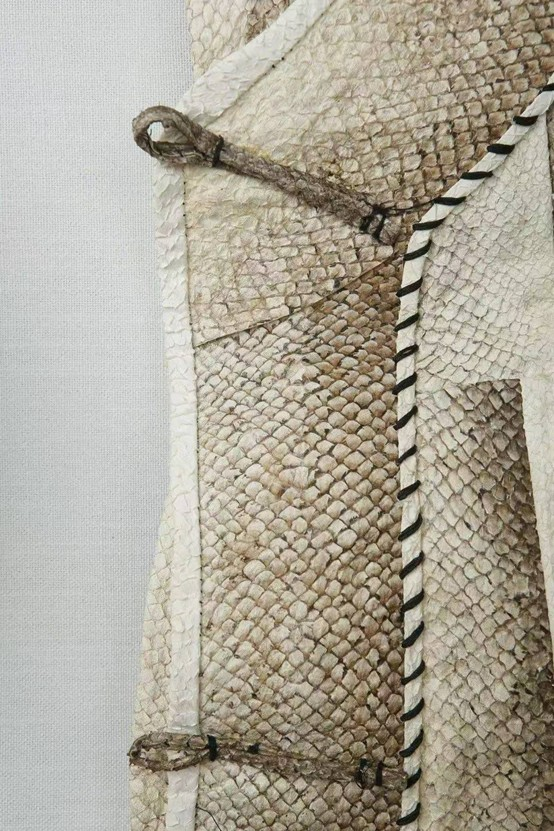
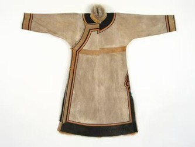
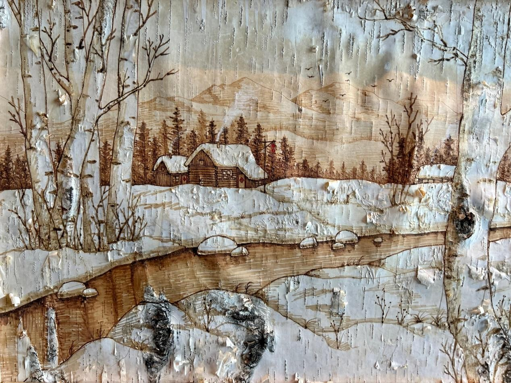
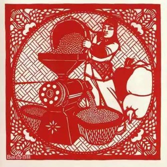
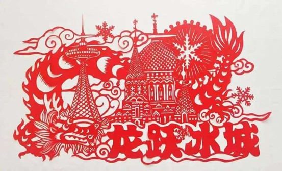
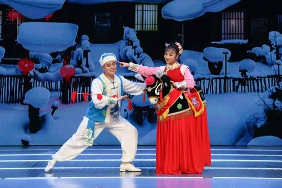
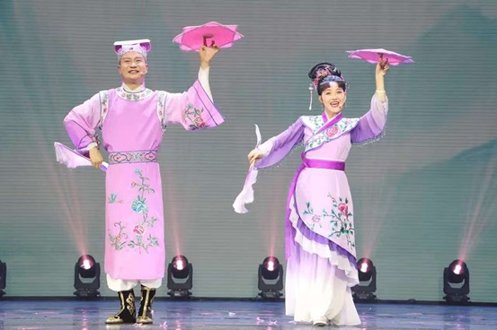

赫哲族鱼皮制作技艺
赫哲族鱼皮制作技艺是赫哲族以北方冷水鱼的鱼皮为原料制作衣物用品的传统民间技艺，这些鱼皮具有一定的厚度和韧性，比较耐磨，适合制作各种生活用品和服饰。常用的鱼种包括胖头鱼、鲟鱼、大马哈鱼、鲤鱼等。自有文字记载始，至今有2500年以上的历史。鱼皮文化是北纬45度以上区域内存在的特色文化。虽然历史上众多民族都曾有过鱼皮文化，但从清代至今只有黑龙江省同江市街津口乡的赫哲族将之传承沿袭下来，用鱼皮制作服装、饰物以及其他生活用品。传统的鱼皮技艺包括一整套复杂的加工过程，分为剥皮、干燥、熟软、拼剪缝合、艺术修饰等步骤。赫哲族鱼皮工艺不仅是一种实用的制衣技术，还承载着赫哲族的审美观念、宗教信仰和生活习俗。鱼皮服饰在赫哲族的日常生活中和重要仪式中都有广泛的应用，如萨满宗教服饰等。2006年6月，赫哲族的鱼皮制作技艺被列入第一批国家级非物质文化遗产名录。

鄂伦春族狍皮制作工艺
狍皮围子是鄂伦春族游猎服饰。
鄂伦春族均着宽肥大袍。因过去主要从事游猎，服饰多以鹿、狍、犴皮制作。领口、袖口、襟边、大袍开衩处均有刺绣、补花等装饰，常用云纹、鹿角纹等。戴犴皮帽，女帽顶用毡子，上缝各种装饰和彩穗；姑娘戴缀有珠子、贝壳、扣子等装饰的头带。男子出猎时，穿狍皮衣、皮裤，戴狍头皮帽，穿乌拉。现今日常已普遍着布衣、胶鞋，但出猎时仍多着皮衣。

桦树皮制作技艺
桦树皮制作技艺是黑龙江近代游猎民族的独特手工技艺，涉及到赫哲、鄂伦春、鄂温克、达斡尔等少数民族生产、生活、信仰、艺术等各个领域，具有历史和森林狩猎民族的文化特色。各少数民族用桦树皮盖房、造舟，缝制各种箱、桶、盒、碗，制作摇篮、玩具，还制作各种桦树皮画、艺术品等。制作技艺有四个步骤：一是剥取树皮；二是将树皮浸软或煮软；三是剪裁缝合；四是装饰图案。在桦树皮制品上，各少数民族都采用砸制、剪贴等方法制成各种艺术图案，表现各民族的审美观。

方正剪纸
方正剪纸是东北，特别是黑龙江区域民族民间剪纸艺术的一个重要流派，清朝中叶起源于黑龙江方正地区。其既有东北少数民族剪纸的粗犷，又有中原剪纸的细致流畅，是本地土著民族剪纸与外来剪纸相互融合的技艺，剪纸艺人自制、改制工具，创造发展有古朴剪法、装饰剪法和套色剪法等几种剪纸方法。内容强调本地人的生活风貌，有挂钱、墙花、棚花、灯笼花、喜花、鞋花、枕头花及幌花等形式。方正剪纸艺人师出多门，师承关系少有纯粹的一脉相承。


东北二人转
黑龙江“北派”传统二人转是东北二人转在本地区一个极有地域特色的分支流派，以其固有的地缘优势、语言特质、唱腔风格及舞蹈技巧等明显区别于辽宁、吉林的二人转，有着100多年的历史。不仅将冀东土语改造、发展成了黑龙江地方方言，还汲取诸多兄弟剧种、曲种的优秀曲牌、唱腔，注重拓展唱腔领域，唱腔音乐十分丰富，素有“九腔十八调，七十二咳咳”之称。其文学(唱词)、音乐(唱腔)和舞蹈(如“龙江浪三场”等)是最具有魅力、与众不同的精华部分。

